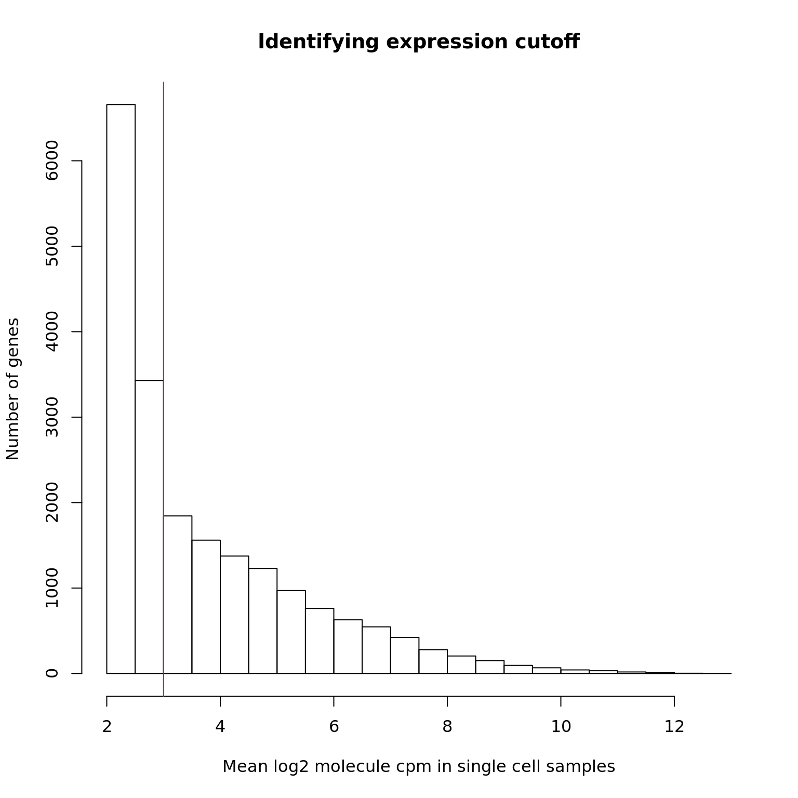

Last updated: 2018-04-05
Code version: e829d9e
library("cowplot")
library("dplyr")
library("edgeR")
library("ggplot2")
library("knitr")
theme_set(theme_cowplot())
source("../code/functions.R")
library("Biobase") # has to be loaded last to use `combine`Import data.
eset <- readRDS("../data/eset.rds")
dim(eset)Features Samples
54792 7200 We performed quality control to identify low quality single cells. Only keep high-quality single cells.
quality <- read.table("../data/quality-single-cells.txt", stringsAsFactors = FALSE)
colnames(quality) <- c("sample", "quality")
eset <- eset[, quality$quality]
dim(eset)Features Samples
54792 5221 We would like to remove genes which have greater than 4096 (44444*4) molecules in any given single cell. These are above our theoretical maximum number of 6-bp UMIs (it can happen when a highly expressed gene as multiple start sites). We did not find any genes with molecules greater than 4096. We found r length(overexpressed_genes_1024) mitochondrial genes which have molecules larger than 1024
## look at human genes
eset_hs <- eset[fData(eset)$source == "H. sapiens", ]
dim(eset_hs)Features Samples
20327 5221 head(featureNames(eset_hs))[1] "ENSG00000000003" "ENSG00000000005" "ENSG00000000419" "ENSG00000000457"
[5] "ENSG00000000460" "ENSG00000000938"## identify gene with molecule > 4096
overexpressed_rows <- apply(exprs(eset_hs), 1, function(x) any(x >= 4096))
overexpressed_genes <- rownames(exprs(eset_hs))[overexpressed_rows]
overexpressed_genescharacter(0)## identify gene with molecule > 1024
overexpressed_rows_1024 <- apply(exprs(eset_hs), 1, function(x) any(x >= 1024))
overexpressed_genes_1024 <- rownames(exprs(eset_hs))[overexpressed_rows]
overexpressed_genes_1024character(0)We identify the lower cutoff using the mean log2 molecule counts per million (cpm) in the high quality single cells.
## convert to log2 cpm
mol_hs_cpm <- cpm(exprs(eset_hs), log = TRUE)
mol_hs_cpm_means <- rowMeans(mol_hs_cpm)
summary(mol_hs_cpm_means) Min. 1st Qu. Median Mean 3rd Qu. Max.
2.366 2.414 3.006 3.771 4.651 12.927 hist(mol_hs_cpm_means, xlab = "Mean log2 molecule cpm in single cell samples",
ylab = "Number of genes", main = "Identifying expression cutoff")
## set a cutoff
lower_exp_cutoff <- 3
abline(v = lower_exp_cutoff, col = "red")
genes_pass_filter <- rownames(mol_hs_cpm)[mol_hs_cpm_means > lower_exp_cutoff]10193 genes have a mean log2 molecule cpm greater than 3
mol_hs_cpm <- data.frame(mol_hs_cpm)
mol_hs_cpm$mean <- apply(mol_hs_cpm, 1, mean)
mol_hs_cpm$filter <- mol_hs_cpm$mean > lower_exp_cutoff
write.table(data.frame(row.names(mol_hs_cpm), mol_hs_cpm[,"filter"]),
file = "../data/genes-pass-filter.txt", quote = FALSE,
sep = "\t", row.names = FALSE, col.names = FALSE)sessionInfo()R version 3.4.1 (2017-06-30)
Platform: x86_64-pc-linux-gnu (64-bit)
Running under: Scientific Linux 7.2 (Nitrogen)
Matrix products: default
BLAS: /project2/gilad/jdblischak/miniconda3/envs/scqtl/lib/R/lib/libRblas.so
LAPACK: /project2/gilad/jdblischak/miniconda3/envs/scqtl/lib/R/lib/libRlapack.so
locale:
[1] LC_CTYPE=en_US.UTF-8 LC_NUMERIC=C
[3] LC_TIME=en_US.UTF-8 LC_COLLATE=en_US.UTF-8
[5] LC_MONETARY=en_US.UTF-8 LC_MESSAGES=en_US.UTF-8
[7] LC_PAPER=en_US.UTF-8 LC_NAME=C
[9] LC_ADDRESS=C LC_TELEPHONE=C
[11] LC_MEASUREMENT=en_US.UTF-8 LC_IDENTIFICATION=C
attached base packages:
[1] parallel methods stats graphics grDevices utils datasets
[8] base
other attached packages:
[1] Biobase_2.38.0 BiocGenerics_0.24.0 knitr_1.16
[4] edgeR_3.20.1 limma_3.34.1 dplyr_0.7.4
[7] cowplot_0.9.1 ggplot2_2.2.1
loaded via a namespace (and not attached):
[1] Rcpp_0.12.13 bindr_0.1 magrittr_1.5 munsell_0.4.3
[5] lattice_0.20-34 colorspace_1.3-2 R6_2.2.0 rlang_0.1.2
[9] stringr_1.2.0 plyr_1.8.4 tools_3.4.1 grid_3.4.1
[13] gtable_0.2.0 git2r_0.19.0 htmltools_0.3.6 assertthat_0.1
[17] yaml_2.1.14 lazyeval_0.2.0 rprojroot_1.2 digest_0.6.12
[21] tibble_1.3.3 bindrcpp_0.2 glue_1.1.1 evaluate_0.10.1
[25] rmarkdown_1.6 stringi_1.1.2 compiler_3.4.1 scales_0.5.0
[29] backports_1.0.5 locfit_1.5-9.1 pkgconfig_2.0.1 This R Markdown site was created with workflowr